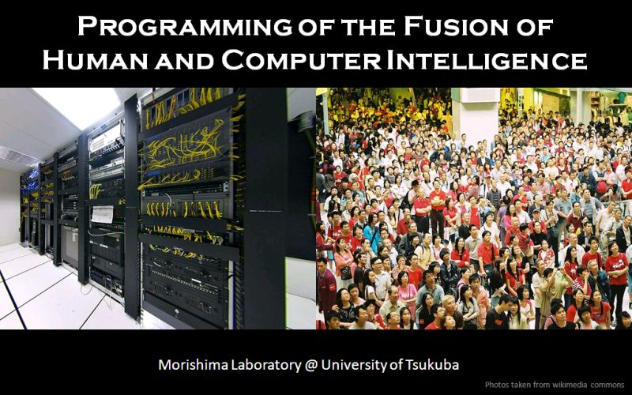

| () |
クラウドソーシング，ヒューマンコンピュテーション，マイクロボランティア |
|

筑波大学森嶋研究室におけるFusionCOMP研究プロジェクトでは，人と計算機の知の融合を実現するための科学的なアプローチに取り組んでいます． ここでは，本研究プロジェクトのキーワードとなる用語のうち，互いに関係が深いが異なる3つの用語について説明します．
|
クラウドソーシング (crowdsourcing)不特定多数の人に仕事を委託することです．ITやコンピュータネットワークが未発達 の時代には実現が困難でしたが，これらの発達によって近年注目を集めています． クラウドソーシングはCrowd(群衆)とsourcing(業務委託)を合成した造語であり Jeff HoweによるWiredの記事"The Rise of Crowdsourcing"[1]で広く知られる事に なりました．[1] Jeff Howe. The Rise of Crowdsourcing. Wired, 2006. |
ヒューマンコンピュテーション (human computation)人の知や力を利用した計算のことです．オンラインゲームを行うことにより 画像にタグ付けを行うESP Game 等で有名なLuis von Ahn博士らは， 「ヒューマンコンピュテーションとは，計算機が処理できないタスクの処理に 人手を利用する事である」としています[2]．例えば，画像からの文字の読み取りに関しては， コンピュータによるソフトウェア(OCRと呼ばれます)が認識できないが 人は認識できるといったケースがしばしばあります．これを利用した仕組みとしてはreCAPCHAが有名です[2] Edith Law, Luis von Ahn: Input-agreement: a new mechanism for collecting data using human computation games. CHI 2009: 1197-1206, 2009. |
マイクロボランティア (micro-volunteering)ボランティアというと，一日がかりであったり数日泊まり込んだりといった イメージがあり，やりたい気持ちはあっても，実際にはなかなか実行することが 困難な場合があります．しかし，情報の提供や確認といったボランティアで あれば，PCやスマートフォンなどを利用して，短時間で可能です． 以前からこのような"小さなボランティア"は行われていましたが， 特に，2000年代後半より，このような短時間で可能なボランティアが マイクロボランティアという用語で明示的に呼ばれるようになり， 多くの人々が少ない負担でボランティアを実行できる仕組みとして 近年注目されています． |
| () |